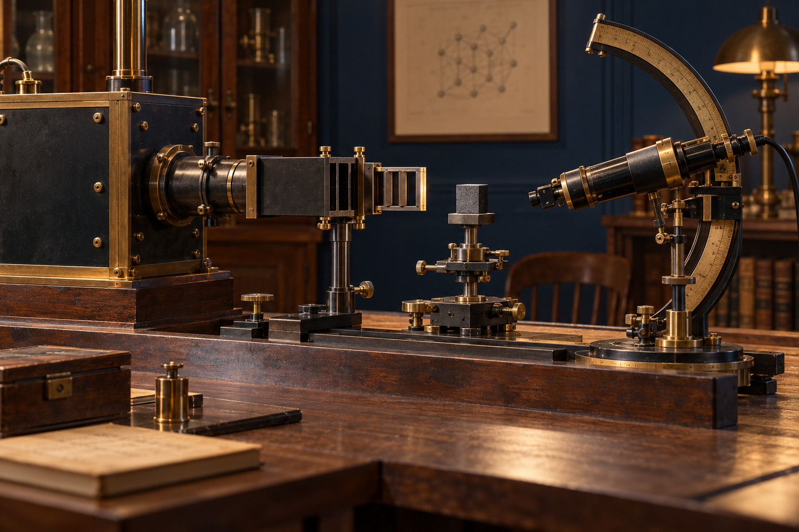
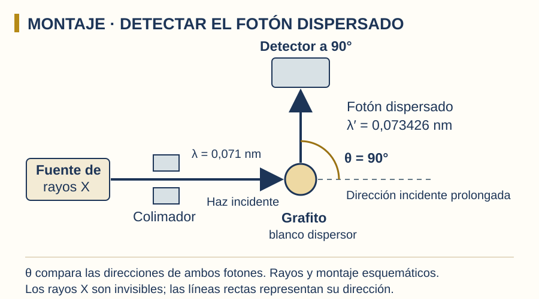
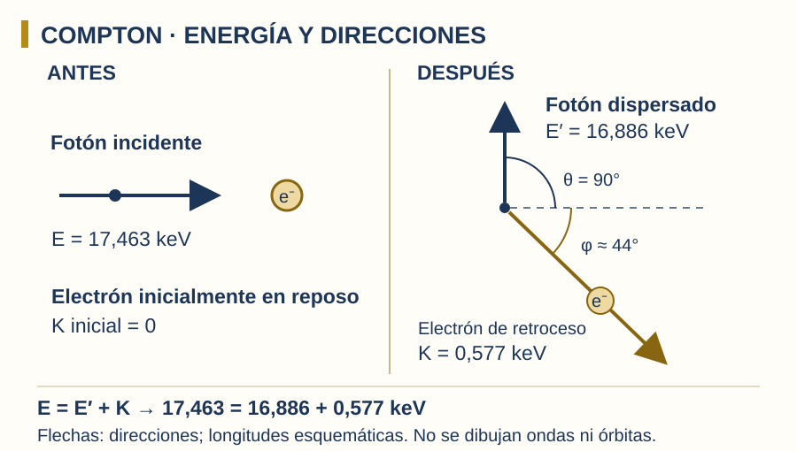
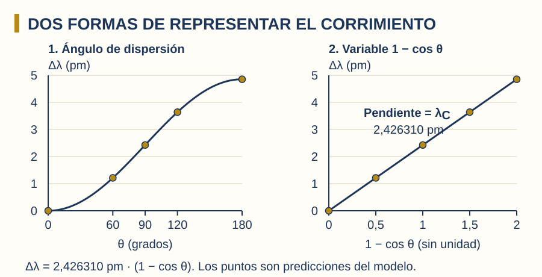

Sistemas Multi Física · Profesor Javier Pereyra
Efecto Compton:
cuando la luz transfiere movimiento
Del fotón de Einstein a la dispersión de rayos X: energía, cantidad de movimiento y una nueva evidencia experimental.
1 Una pregunta después del efecto fotoeléctrico
En la clase 15 usamos \(E=hf\): cada fotón transporta una energía determinada por su frecuencia. En el efecto fotoeléctrico, la absorción de un fotón puede extraer un electrón de un material. Ahora investigamos otra posibilidad: el fotón sale después de interactuar, pero cambia de dirección y energía.
Parte de los rayos X dispersados presenta otra longitud de onda.
El electrón recibe energía y cantidad de movimiento.
El ángulo permite calcular cuánto cambia la longitud de onda.
2 Un fotón tiene energía y cantidad de movimiento
La cantidad de movimiento, también llamada momento lineal, indica el movimiento que se intercambia en una interacción. Es vectorial: importan su módulo y su dirección. Para objetos lentos con masa se usa \(\vec p=m\vec v\); el fotón requiere otra relación.
\(E\): energía del fotón (J); \(f\): frecuencia (Hz); \(\lambda\): longitud de onda en el vacío (m); \(h\): constante de Planck (J·s); \(c\): rapidez de la luz en el vacío (m/s); \(p\): módulo de su cantidad de movimiento (kg·m/s). Su vector apunta en la dirección de propagación.
Menor longitud de onda → mayor energía y mayor momento. Un fotón tiene masa en reposo nula y, aun así, transporta energía y cantidad de movimiento. No debemos aplicarle \(p=mv\) de la mecánica de objetos lentos.
3 Rayos X, grafito y un detector

- Una fuente produce rayos X con longitud de onda conocida \(\lambda\).
- Un colimador limita la dirección del haz, que incide sobre grafito.
- Un detector analiza la radiación que sale en una dirección determinada por \(\theta\).
- Se compara la longitud de onda dispersada \(\lambda'\) con la incidente.
Desplazá el esquema para leerlo completo.

La experiencia muestra una componente desplazada hacia longitudes de onda mayores y otra prácticamente sin desplazamiento. La componente Compton se explica mediante la interacción con electrones débilmente ligados; una respuesta conjunta del átomo puede producir una dispersión con desplazamiento mucho menor.
4 La interacción: antes y después
Modelamos un fotón incidente y un electrón libre inicialmente en reposo. En un material, esta aproximación resulta útil para electrones débilmente ligados cuando la energía del fotón supera ampliamente la energía de enlace.
Desplazá la representación para leer sus etiquetas.

Antes
El fotón lleva energía \(E\) y momento \(\vec p\). El electrón tiene energía de reposo, pero su energía cinética y su momento inicial son cero.
Después
El fotón dispersado tiene energía \(E'\) y momento \(\vec p'\). El electrón retrocede con energía cinética \(K_e\) y momento \(\vec p_e\).
La energía de reposo del electrón es la misma antes y después y se cancela en el balance energético. Estas ecuaciones describen el sistema fotón–electrón del modelo.
5 La fórmula de Compton
\(\Delta\lambda\): aumento de longitud de onda (m); \(\lambda'\): longitud de onda del fotón dispersado (m); \(\lambda\): longitud de onda incidente (m); \(m_e\): masa del electrón (kg); \(\theta\): ángulo del fotón dispersado, entre \(0^\circ\) y \(180^\circ\).
\(\lambda_C=h/(m_ec)\approx2{,}42631\times10^{-12}\ \mathrm m=2{,}42631\ \mathrm{pm}\) es la longitud de onda de Compton del electrón. Es una constante de escala; no es la longitud de onda de todos los fotones.
Dentro de este modelo, el desplazamiento absoluto depende del ángulo y no de la longitud de onda incidente. El porcentaje de cambio y la energía cedida sí dependen de la energía inicial.
| Magnitud | Valor | Conversión útil |
|---|---|---|
| Constante de Planck \(h\) | \(6{,}62607015\times10^{-34}\ \mathrm{J\,s}\) | \(1\ \mathrm{nm}=10^{-9}\ \mathrm m\) |
| Rapidez de la luz \(c\) | \(299\,792\,458\ \mathrm{m/s}\) | \(1\ \mathrm{pm}=10^{-12}\ \mathrm m\) |
| Masa del electrón \(m_e\) | \(9{,}1093837139\times10^{-31}\ \mathrm{kg}\) | \(1\ \mathrm{nm}=1000\ \mathrm{pm}\) |
| Conversión de energía | \(1\ \mathrm{eV}=1{,}602176634\times10^{-19}\ \mathrm J\) | \(1\ \mathrm{keV}=1000\ \mathrm{eV}\) |
| Producto \(hc\) | \(\approx1{,}239842\ \mathrm{keV\,nm}\) | \(E(\mathrm{keV})=1{,}239842/\lambda(\mathrm{nm})\) |
6 El ángulo cambia el resultado
| \(\theta\) | \(\Delta\lambda\) (pm) | \(\lambda'\) (nm) | \(E'\) (keV) | \(K_e\) (keV) |
|---|---|---|---|---|
| 0° | 0,000 | 0,071000 | 17,463 | 0,000 |
| 60° | 1,213 | 0,072213 | 17,169 | 0,293 |
| 90° | 2,426 | 0,073426 | 16,886 | 0,577 |
| 120° | 3,639 | 0,074639 | 16,611 | 0,851 |
| 180° | 4,853 | 0,075853 | 16,345 | 1,117 |
Desplazá el gráfico para leer ambos ejes.

El primer gráfico es curvo: la relación con el ángulo no es directamente proporcional. El segundo es una recta que pasa por el origen; su pendiente es \(\lambda_C\), porque \(\Delta\lambda=\lambda_C x\) con \(x=1-\cos\theta\).
A \(0^\circ\) no hay desplazamiento ni transferencia en el límite del modelo. A \(180^\circ\), el fotón vuelve hacia atrás y el desplazamiento es máximo: \(2\lambda_C\).
7 Ejemplo resuelto: dispersión a 90°
Problema: un fotón de rayos X con \(\lambda=0{,}071\ \mathrm{nm}\) se dispersa a \(90^\circ\) sobre un electrón inicialmente en reposo. Calculá \(\lambda'\), la energía final y la energía cinética del electrón.
Datos: \(\lambda=0{,}071\ \mathrm{nm}\), \(\theta=90^\circ\), \(\lambda_C=0{,}00242631\ \mathrm{nm}\).
Fórmula: \(\lambda'=\lambda+\lambda_C(1-\cos\theta)\).
Reemplazo: \(\lambda'=0{,}071+0{,}00242631(1-0)=0{,}07342631\ \mathrm{nm}\).
Energías: \(E=1{,}239842/0{,}071\approx17{,}463\ \mathrm{keV}\); \(E'=1{,}239842/0{,}07342631\approx16{,}886\ \mathrm{keV}\).
Resultado: \(K_e=E-E'\approx0{,}577\ \mathrm{keV}\).
Interpretación: el electrón recibe cerca del 3,30 % de la energía incidente. El fotón sale con menor frecuencia y mayor longitud de onda; su rapidez en el vacío sigue siendo \(c\).
Ampliación: conservar el momento vectorial
Tomemos el haz incidente hacia \(+x\) y el fotón final hacia \(+y\). Entonces \(p_x=h/\lambda\approx9{,}332\times10^{-24}\ \mathrm{kg\,m/s}\) y \(p'_y=h/\lambda'\approx9{,}024\times10^{-24}\ \mathrm{kg\,m/s}\).
Para conservar el momento, \(p_{ex}=p_x\) y \(p_{ey}=-p'_y\). El electrón sale hacia la derecha y hacia abajo, a unos \(44{,}0^\circ\) por debajo del haz inicial.
\(p_e=\sqrt{p_x^2+(p'_y)^2}\approx1{,}298\times10^{-23}\ \mathrm{kg\,m/s}\). No se obtiene restando los módulos \(p-p'\), porque los fotones viajan en direcciones distintas.
8 Ver el intercambio con Remotion
Animación · 24 segundos · sin audio
Desplazá el video para leer las etiquetas o usá pantalla completa.
- 0–5 s: reconocé el fotón de rayos X y el electrón en reposo.
- 5–12 s: observá la interacción, el cambio de dirección y el retroceso. El fotón mantiene su rapidez.
- 12–18 s: compará \(E\), \(E'\) y \(K_e\); seguí el triángulo de momentos.
- 18–24 s: compará los desplazamientos a 0°, 90° y 180°.
9 Laboratorio: elegí el ángulo
Esta herramienta muestra predicciones del modelo, no mediciones. Conservamos la aproximación de electrón libre inicialmente en reposo. Cambiá una variable por vez y registrá los resultados.
Dispersión fotón–electrón
Intervalo de exploración: 0,005–0,500 nm. Rayos X en el modelo; el resultado no incluye enlaces atómicos ni probabilidades de dispersión.
| θ | Δλ (pm) | λ′ (nm) | E′ (keV) | Kₑ (keV) |
|---|
10 Tres formas de interactuar con la materia
| Fenómeno | Qué ocurre con la radiación | Qué estudiamos |
|---|---|---|
| Efecto fotoeléctrico | Se absorbe un fotón; puede extraerse un electrón del material. | Umbral y \(K_{\max}=hf-W\). |
| Efecto Compton | Hay un fotón dispersado con otra dirección y, si \(\theta>0^\circ\), menor energía. | Retroceso del electrón; conservación de energía y momento. |
| Transiciones atómicas | El átomo absorbe o emite un fotón al cambiar de estado energético. | Estados ligados y energías permitidas; lo veremos con Bohr. |
La dispersión Compton ayuda a comprender la radiación dispersa en detectores de rayos X y gamma. Es relevante para analizar señales y reconstruir direcciones en instrumentos científicos.
11 Actividades progresivas
Usá las constantes de la sección 5. Salvo indicación distinta, tomá \(\lambda=0{,}071\ \mathrm{nm}\) y el electrón inicialmente en reposo. Mostrá unidades y explicá el resultado.
- Convertí la longitud de onda incidente a metros y calculá la energía del fotón en J y en keV.
- Calculá su cantidad de movimiento. ¿Por qué no usaste \(p=mv\) con masa cero?
- Analizá el límite \(\theta=0^\circ\): ¿cuánto valen \(\Delta\lambda\), \(E'\) y \(K_e\)?
- Calculá \(\Delta\lambda\) y \(\lambda'\) para \(\theta=60^\circ\).
- Rehacé el ejemplo a \(90^\circ\) y comprobá el balance \(E'+K_e=E\). Explicá qué pasa con la rapidez del fotón.
- Completá una tabla con \(\theta=60^\circ,90^\circ,120^\circ\), \(\Delta\lambda\), \(\lambda'\) y \(E'\). Describí la tendencia sin confundir frecuencia con longitud de onda.
- Buscá el ángulo que produce el desplazamiento máximo. Calculá \(\Delta\lambda_{\max}\) y el porcentaje máximo de energía cedida para este fotón.
- Una medición da \(\Delta\lambda=\lambda_C/2\). Hallá el ángulo. Si cambia la longitud de onda incidente pero se mantiene ese ángulo, ¿cambia el desplazamiento absoluto?
- Ampliación: a \(90^\circ\), el fotón incidente viaja hacia \(+x\) y el final hacia \(+y\). Calculá \(p_{ex}\), \(p_{ey}\) y el módulo \(p_e\). Dibujá los vectores.
- Graficá \(\Delta\lambda\) frente a \(\theta\) y frente a \(1-\cos\theta\). ¿Cuál es lineal y qué significa su pendiente? Compará además Compton, fotoeléctrico y transiciones atómicas con una frase para cada uno.
Respuestas orientativas para revisar después de resolver
- \(7{,}1\times10^{-11}\ \mathrm m\); \(2{,}798\times10^{-15}\ \mathrm J\approx17{,}463\ \mathrm{keV}\).
- \(9{,}332\times10^{-24}\ \mathrm{kg\,m/s}\); para fotones usamos \(p=E/c=h/\lambda\).
- \(\Delta\lambda=0\), \(E'=E\), \(K_e=0\): límite sin transferencia.
- \(1{,}213\ \mathrm{pm}\); \(\lambda'\approx0{,}072213\ \mathrm{nm}\).
- \(\lambda'\approx0{,}073426\ \mathrm{nm}\), \(E'\approx16{,}886\ \mathrm{keV}\), \(K_e\approx0{,}577\ \mathrm{keV}\). La rapidez sigue siendo \(c\).
- Los valores están en la tabla de la sección 6: con mayor ángulo aumenta \(\Delta\lambda\) y disminuye \(E'\).
- \(180^\circ\), \(\Delta\lambda_{\max}\approx4{,}853\ \mathrm{pm}\); \(K_e\approx1{,}117\ \mathrm{keV}\), cerca del 6,40 %.
- \(\cos\theta=1/2\), \(\theta=60^\circ\). A ángulo fijo no cambia \(\Delta\lambda\) en este modelo.
- \(p_{ex}\approx9{,}332\times10^{-24}\), \(p_{ey}\approx-9{,}024\times10^{-24}\ \mathrm{kg\,m/s}\); \(p_e\approx1{,}298\times10^{-23}\ \mathrm{kg\,m/s}\).
- El gráfico frente a \(1-\cos\theta\) es lineal, con pendiente \(\lambda_C\). Compton: dispersión y retroceso; fotoeléctrico: absorción y extracción; transiciones: cambio de estado ligado con absorción o emisión.
12 Preguntas para pensar y puente hacia Bohr
- ¿Cómo puede un fotón tener momento si su masa en reposo es cero?
- Si aumentamos la intensidad manteniendo frecuencia y ángulo, ¿cambia el desplazamiento de cada evento o principalmente la cantidad de eventos?
- ¿Qué observarías si confundieras el ángulo del fotón con el del electrón?
- ¿Por qué un fotón que pierde energía no se vuelve más lento?
La próxima pregunta: si los fotones intercambian energía con los electrones, ¿por qué un átomo como el hidrógeno emite solamente ciertas energías? Para responder, pasamos a la clase 17: modelo de Bohr y espectros atómicos.
13 Fuentes y alcance del material
- Arthur H. Compton · Physical Review 21, 483 (1923): artículo original sobre dispersión de rayos X.
- OpenStax · Efecto Compton: experimento, momento del fotón, hipótesis y deducción.
- Premio Nobel de Física 1927: Compton y Wilson.
- Nobel · Rayos X y grafito: lectura histórica del experimento.
Las imágenes raster son recreaciones con IA; los diagramas son recursos didácticos propios. La simulación calcula el modelo ideal de electrón libre inicialmente en reposo. No calcula intensidad, sección eficaz, efectos de enlace ni respuesta de un detector real. Los resultados se redondean para el trabajo escolar.